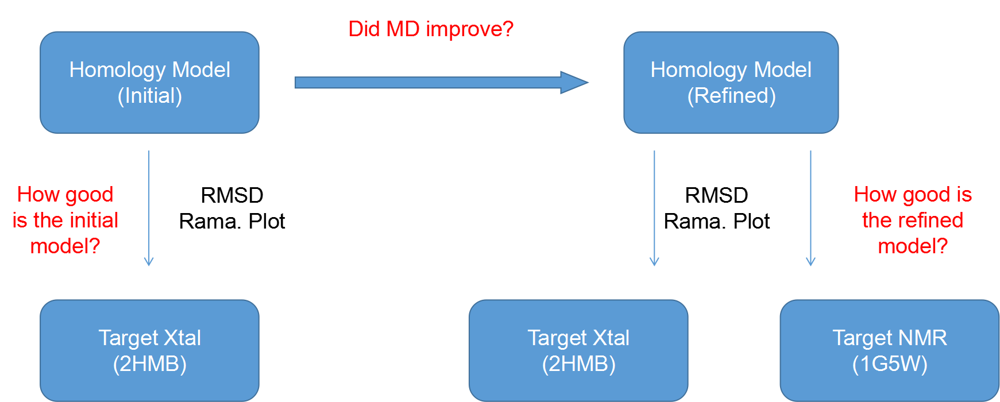

Assessment scheme
Assessment of the homology model should proceed according to this scheme:
- Compare your initial homology model to the target crystal structure. How well does the model approximate the target? Is it a good model?
- Compare your refined homology model to the target crystal and NMR structures. How well does the refined model approximate the target? Is it a good model?
- Did MD refinement improve the homology model?

Initial model & target crystal structure
In order to assess how well your initial homology model approximates the target crystal structure, use the three tools discussed on the previous page to gather data about their respective PDB files.
Homology model PDB (final PDB obtained from MOE)
- Use VMD to obtain overlays, relative RMSDs (It can be found in VMD tutorial webpage )
- Use Mol Probity to obtain a Ramachandran plot
Target crystal structure PDB (ID# 2HMB)
- Use VMD to obtain overlays, relative RMSDs
- Use Mol Probity to obtain a Ramachandran plot
Assignment summary
Report
10 pages, double spaced but not figures and references
Example format:
- Cover page
- Introduction Methods
- Results and Discussion
- Conclusions
- Figures
- References
Presentation
- 20 minutes, with 5 minutes for questions
- Wednesday, April 24
- Include trajectory movie